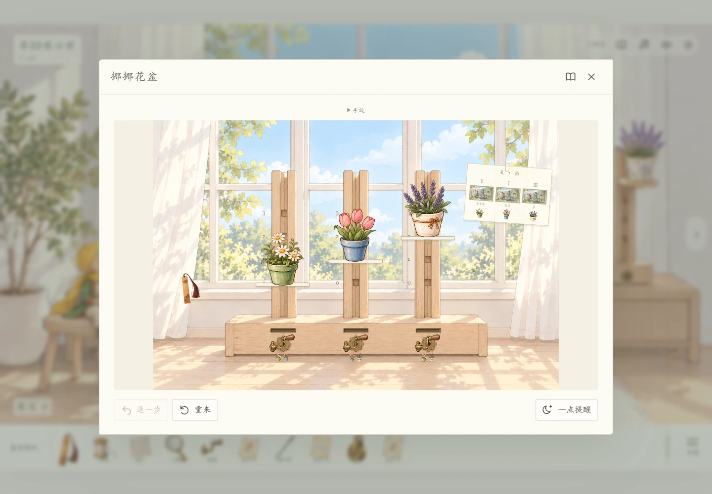
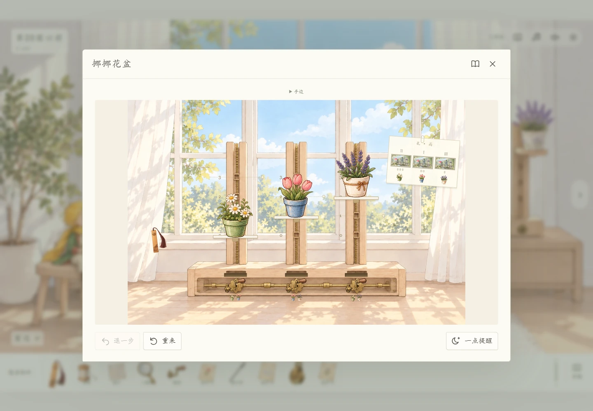
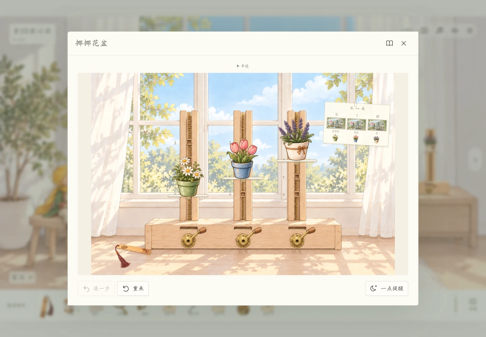

BEFORE THE TWENTIETH ORBIT
先把这一处慢慢磨好。两轮改版都留着，点击画面可以放大；第二轮已接入游戏，录像里是实际拖动与通关。



约18秒。前置机关已在独立演示中完成，本关通过鼠标实际操作；配乐为游戏内原创琴声。录制包含看胶片、联动升降、书签制动、反转通关与返回远景。
依次是卡齿、转动、书签入槽、抽出、碰到头、松手和盖章。小样稍稍放大音量，游戏里可以单独调整物件的声音。